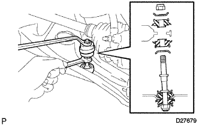
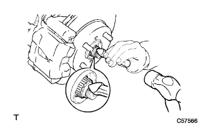

Front axle hub LH installation |
| 1. Lonxle ASSY LH installation |
Attach the Roi Arm ASSY to the front axle ASSY LH and tighten it with a castle nut.
Attach a new clip.
 |
Attach the axle ASSY to the shock absorber ASSY, insert two bolts from the front of the vehicle, and tighten two nuts.
| 2. Tie rod end sub-assy LH installation |
Attach the tie rod end to the steering knuckle and tighten with a castle nut.
Attach a new cottal pin.
| 3. Stabilizer bar FR installation |
Attach 2 cushions retainer No. 1, 2 cushions and stabilizer bars in the direction of the figure, and tighten with a nut.
|  |
Fix the stabilizer bolt with a spanner (10mm) and tighten a new nut.
| 4. Installation of front disc |
Mark the disc and axle hub and remove the disk.
| 5. Front Dicek Brake Kiki ASSY LH Installation |
 |
Attach the Daisk Brake Kiki ASSY to the steering knuckle with two bolts.
| 6. Lonxle shaft nut LH installation |
Use a soketsu trench (30mm) to attach a new hub nut.
| 7. Front axle swing and axial rattling inspection |
reference)| 8. Speed sensor FR LH installation |
In the bolt, attach the speed sensor wire and flexible hose to the shock absorber ASSY.
 |
Attach the critip to the shock absorber ASSY.
 |
Attach the speed sensor FR to the steering knuckle with bolts.
| 9. Lonxle shaft nut LH installation |
|  |
Use tagane and hammer to make a hub nut.
| 10. Installation of front tires |
| 11. Front wheel alignment inspection / coordination |
reference)| 12. Test mode inspection (speed sensor system) |
reference)